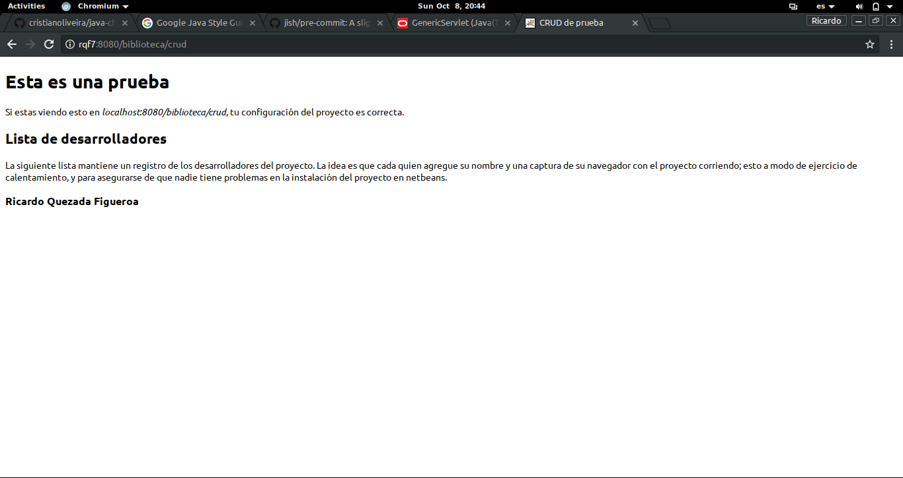
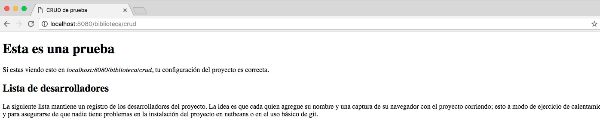
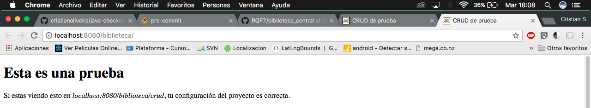
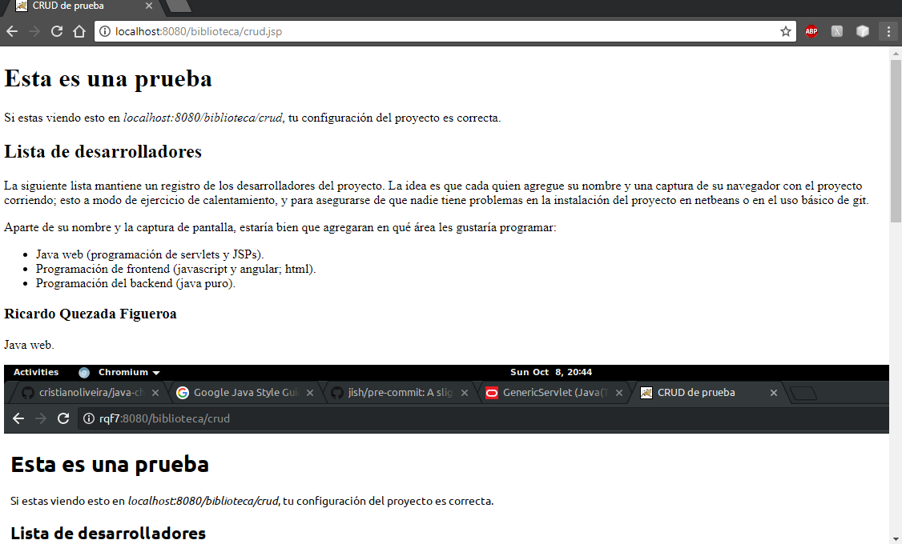
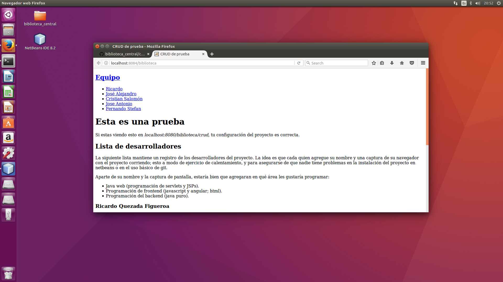
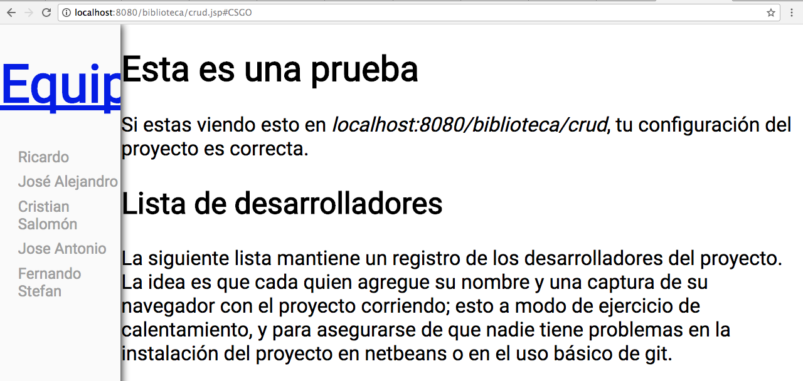
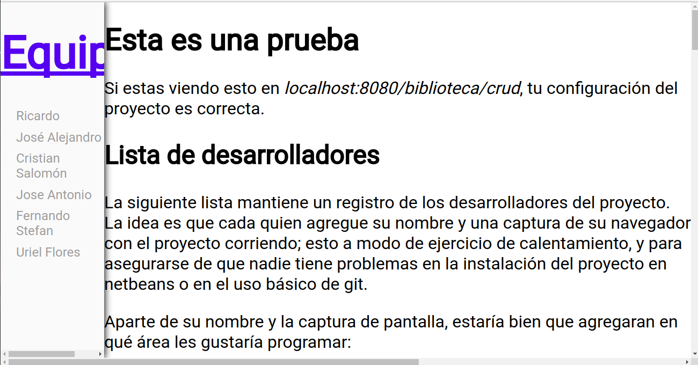
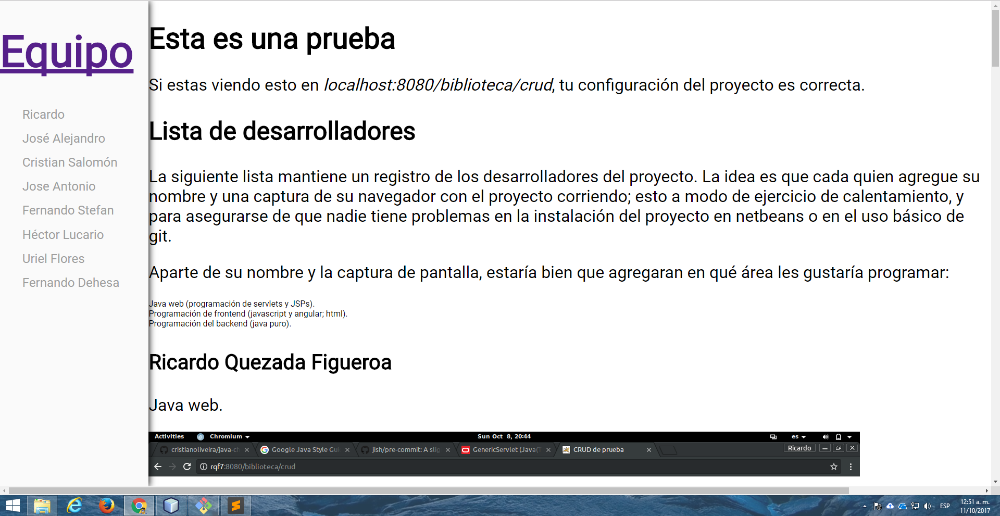

Esta es una prueba
Si estas viendo esto en localhost:8080/biblioteca/crud, tu configuración del proyecto es correcta.
Lista de desarrolladores
La siguiente lista mantiene un registro de los desarrolladores del proyecto. La idea es que cada quien agregue su nombre y una captura de su navegador con el proyecto corriendo; esto a modo de ejercicio de calentamiento, y para asegurarse de que nadie tiene problemas en la instalación del proyecto en netbeans o en el uso básico de git.
Aparte de su nombre y la captura de pantalla, estaría bien que agregaran en qué área les gustaría programar:
- Java web (programación de servlets y JSPs).
- Programación de frontend (javascript y angular; html).
- Programación del backend (java puro).
Ricardo Quezada Figueroa
Java web.
José Alejandro Esquivel de Jesús
Web front
Cristian Salomón Garcia Olmedo
Jose Antonio Guzman Garcia
Fernando Stefan Lugo Estrada
Back-end (Java puro)
Héctor Andrés Lucario Castillo
Programación del back-end(java puro)

Uriel Flores Valdovinos
Back-end (Java puro)
Erick Javier Sánchez Gama
Java web.
Fernando Esteban Dehesa Lozada
Front-End.
